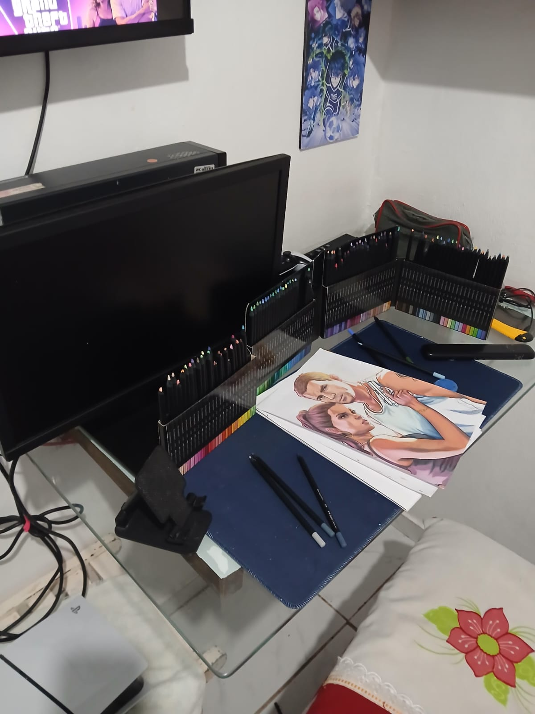

Introdução do site
Olá! Bem-vindo ao Sobre Desenho, um site educativo e interativo de um desenhista para outro.
Sobre Desenho é um site com o intuito de mostrar perspectivas e ajudar desenhistas iniciantes, assim como apresentar pontos de vista daqueles que já estão presentes no mundo do desenho.
Esse site foi criado por Kateriny Nickole e possui relatos de outras pessoas que também têm experiências com desenho. A partir do seu acesso, este site também se torna seu! Use a página de requisições para fazer pedidos e compartilhar suas histórias, experiências, conselhos e recomendações.

Conheça o conteúdo do site
- Página 1: Introdução do site.
- Página 2: Sobre mim, nossas histórias com desenho.
- Página 3: Sobre tutoriais, vídeo vs. estático.
- Página 4: Por que desenhar? Efeitos no dia a dia.
- Página 5: Boas práticas, técnicas iniciais.
- Página 6: Materiais, como escolher e usar.
- Página 7: Estilos de desenho, existentes e próprios.
- Página 8: Métodos de aprendizado, qual se encaixa com você?
- Página 9: Bloqueio criativo, como lidar.
- Página 10: Canais, recomendações pessoais.
- Página 11: Repertório e portfólio, pessoal e profissional.
- Página 12: Referências, como usar e onde buscar.
- Página 13: Expectativas de crescimento, como melhorar e respeitar seu próprio ritmo.
- Página 14: Requisições, formulários para pedidos e interações com o site.
- Página 15: Fontes de pesquisa, sites, canais e fontes citados.